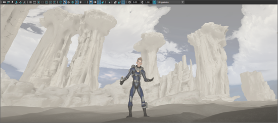

-
在视口面板菜单中选择“着色 > 硬件雾”(Shading > Hardware Fog)。
-
选择“着色 > 硬件雾”(Shading > Hardware Fog) >
 ，以打开“硬件渲染器 2.0 设置”(Hardware Renderer 2.0 Settings)，然后调整雾属性（例如衰减、颜色和密度）。
，以打开“硬件渲染器 2.0 设置”(Hardware Renderer 2.0 Settings)，然后调整雾属性（例如衰减、颜色和密度）。
-
若要从雾渲染中排除特定的对象（例如，如果对象之一已烘焙雾），或者调整应用于对象的雾效果数量，请在对象属性编辑器的“对象显示”(Object Display)部分中调整“硬件雾倍增”(Hardware Fog Multiplier)属性。此值设置为 0 时，对象不受雾的影响。此值设置为 1 时，雾将应用于对象。将滑块调整为介于 0 和 1 之间的值，以调整雾效果的数量。
-
若要在渲染中包括雾，请在“渲染设置”(Render Settings)窗口的“渲染选项”(Render Options)部分中启用“硬件雾”(Hardware Fog)。请注意，并非所有渲染器都提供此选项。
